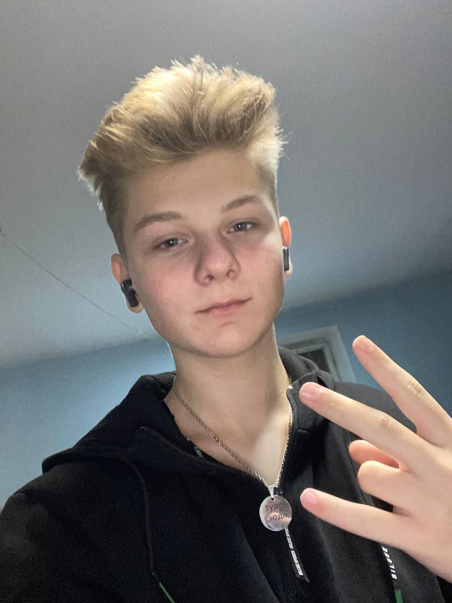

Fotograf - wydarzenia szkolne
Okres: 2022 - 2025
Fotografowanie wydarzeń szkolnych, obróbka zdjęć oraz przygotowanie materiałów dla uczniów i nauczycieli.
Email: mpaderi1@stu.vistula.edu.pl
Telefon: +48 798 054 881
Miasto: Warszawa
GitHub: github.com/MaksymPaderin76040

Nazywam się Maksym, mam 18 lat. Pochodzę z Ukrainy, z miasta Dniepr. Interesuję się grami komputerowymi, zajmuję się fotografią - mam 2 aparaty i kilka obiektywów.
Naprawiam i konfiguruję również komputery oraz laptopy. Mieszkam w Polsce już pół roku i studiuję na Vistuli.
Okres: 2022 - 2025
Fotografowanie wydarzeń szkolnych, obróbka zdjęć oraz przygotowanie materiałów dla uczniów i nauczycieli.
Okres: 2025 - obecnie
Obsługa gości podczas wydarzeń i bankietów w hotelach takich jak Focus, Hilton oraz Radisson Blu (wszystkie są w Warszawie).
Akademia Finansów i Biznesu Vistula, Warszawa - Informatyka
2025 - obecnie (I rok studiów)
Liceum Naukowe Stosunków Międzynarodowych II-III stopnia, Dniepr
2023 - 2025
Pełne wykształcenie średnie (ukończone z wyróżnieniem - złoty medal)
Gimnazjum nr 57, Dniepr
2014 - 2023
niepełne średnie (gimnazjalne), świadectwo z czerwonym paskiem.